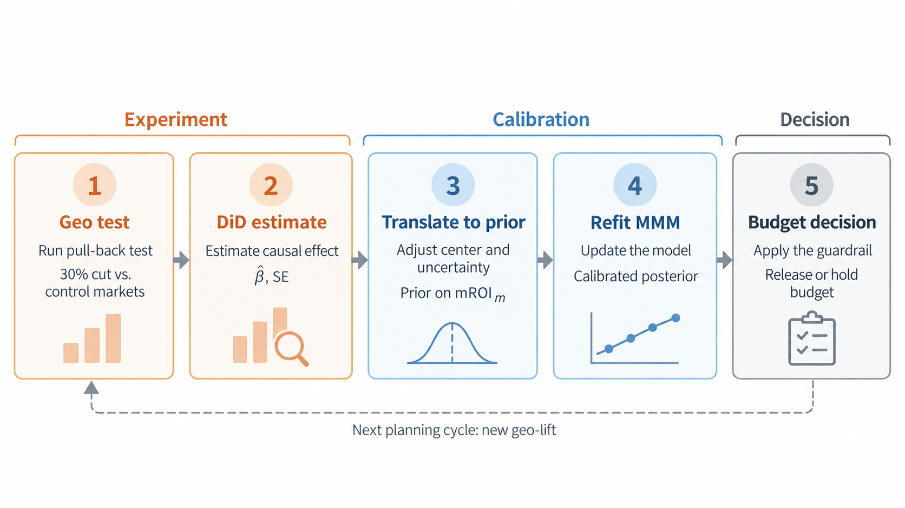

6.4 MMM mit Experimenten kalibrieren
Über die deutsche Ausgabe
Diese Seite ist eine KI-Übersetzung der englischen Ausgabe von Marketing Science in Python. Die englische Ausgabe ist maßgeblich und hat bei Abweichungen Vorrang. Code, Notebooks und Text in Abbildungen bleiben auf Englisch. Englische Ausgabe lesen
Bevor das Geo-Experiment lief, hatte das MMM vorhergesagt, was eine 30%-Kürzung von Google Search kosten würde: $2.95 an Umsatz pro entferntem Dollar, mit einem 90%-Kredibilitätsintervall von 0.34 bis 8.48. Das Experiment in Abschnitt 6.3 maß 1.500, mit einem 95%-Konfidenzintervall von 0.892 bis 2.109. Das Modell hatte den Gesamtwert des Kanals ungefähr richtig und die Kosten der Kürzung etwa doppelt zu hoch, und sein Intervall war so oder so zu breit, um darauf zu handeln. Beides ist nicht überraschend. Die Search-Ausgaben hatten sich in drei Jahren Historie kaum bewegt, sodass die Search-Schätzung des Modells überwiegend der Prior war, mit dem es gestartet ist, und das Experiment ist die erste kausale Evidenz über den Kanal.
Die Kalibrierung bringt diese Evidenz in das Modell. Das Experiment hat einen Kanal an einem Arbeitspunkt über ein Fenster gemessen; das Modell aus Abschnitt 6.2 muss weiterhin Budgets über fünf Kanäle festlegen. Also übersetzen wir das Ergebnis in einen Prior, schätzen neu und prüfen, ob sich die Empfehlung ändert. Das Ziel ist nicht, das Modell mit dem Experiment in Übereinstimmung zu bringen. Es ist herauszufinden, ob bessere Evidenz die Entscheidung ändert, und wenn nicht, warum nicht. Weil das Ergebnis hier der Umsatz ist, ist Meridians ROI numerisch ein Umsatz-ROAS; der Text sagt ROAS, und der Code behält Meridians Namen bei.

Begleit-Notebook: sec6.2_6.4_mmm_meridian.ipynb wird mit Abschnitt 6.2 geteilt. Seine Schritte 14-18 halten die eigene Vorhersage des Modells für den Test fest, wandeln die experimentelle Schätzung in einen Prior um, schätzen das Modell neu und optimieren das Budget erneut.
Auf GitHub ansehen
Die Evidenz der Modellgröße zuordnen
Das Experiment hat die Rendite eines Ausgabenblocks gemessen: was das Unternehmen pro Dollar verlor, als Search acht Wochen lang von 100% auf 70% seines Budgets fiel. Das Modell berichtet zwei andere Renditen für denselben Kanal. Der durchschnittliche ROAS teilt den gesamten inkrementellen Umsatz von Search durch seine Gesamtausgaben, die von null aus gemittelte Rendite. Der marginale ROAS ist die Steigung der Response-Kurve bei den heutigen Ausgaben, die Rendite des nächsten Dollars. Auf einer sättigenden Kurve arbeiten die frühen Dollar härter als die späteren, sodass der durchschnittliche ROAS überall dort über dem marginalen ROAS liegt, wo die Kurve begonnen hat, sich zu krümmen (Abbildung 2). Die getestete Kürzung mittelt die Kurve über die oberen 30% der Ausgaben, landet also nahe an der marginalen Rendite und deutlich unter der durchschnittlichen.

Meridians Standard-Prior, roi_m, liegt auf dem durchschnittlichen ROAS. Legt man die dauerbereinigte Schätzung, 1.71, auf diesen Prior, gehorcht das Modell: Das Notebook probiert es aus, und der durchschnittliche Posterior-ROAS landet bei 1.96, gegenüber eingepflanzten 3.30. Das Modell ist nun gezwungen, Search mit einer Kurve zu erklären, deren Rendite von null aus 40% zu niedrig ist. Hier landen die marginale Rendite und die Vorhersage für die getestete Kürzung weiterhin nahe an der Wahrheit, 1.59 und 1.44, weil die Kurve über den oberen Teil von Searchs Bereich nahezu gerade ist, sodass der Durchschnitt die Größe ist, die schiefgeht; auf einem stärker gekrümmten Kanal würden die lokalen Ablesungen mitgehen. Bei TikTok, dessen marginale Rendite etwa ein Viertel seiner durchschnittlichen beträgt, läge dieselbe Ersetzung um einen Faktor von fast vier daneben. Eine Messung gehört auf den Parameter, der zu ihr passt.
Das Experiment in einen Prior verwandeln
Meridian kann den Prior stattdessen auf den marginalen ROI legen, mit media_prior_type="mroi". Dieser Parameter ist die Rendite einer 1%-Erhöhung der Ausgaben. Das Experiment hat eine 30%-Kürzung über acht Wochen gemessen, es informiert den Prior also über eine näherungsweise Übersetzung, statt den Parameter zu beobachten: Annahmen über die Form der Kurve, über den Carryover und darüber, wie sich acht Märkte auf das Land übertragen, bleiben Teil des Ergebnisses. Für Search liegen der Block und die Steigung nahe beieinander, 1.50 gegenüber eingepflanzten 1.57; für einen langsamen Kanal wie TV/CTV täten sie das nicht, wie Abschnitt 6.5 zeigt.
Die Übersetzung hat drei Teile. Die Dauer korrigiert das Zentrum um den Carryover, den das Testfenster verpasst hat. Eine Kürzung in Woche acht kostet noch in den Wochen neun und zehn Umsatz, sodass selbst bei Searchs Halbwertszeit von einer Woche etwa 12% des Effekts einer anhaltenden Achtwochenkürzung nach dem Fenster anfallen, und das Zentrum wandert von 1.50 auf 1.71. Dieser Anteil ist eine Näherung, aus gleichen wöchentlichen Änderungen und linearen Carryover-Gewichten; Sättigung und der tatsächliche Ausgabenpfad können ihn verändern. Für einen langsamen Kanal wie TV/CTV wäre die Korrektur um ein Mehrfaches größer. Die Ausgabenskala verbreitert den Prior. Die acht Testmärkte liefen mit etwa einem Fünftel der nationalen Ausgabenrate, und je weiter ein Test von der Skala des Kanals entfernt liegt, desto weniger lässt sich annehmen, dass sein Ergebnis übertragbar ist. Dieser Term bringt den Standardfehler von 0.257 auf 0.64, und die Übersetzungsunsicherheit unten bringt ihn auf 0.69. Die eigene Präzision des Experiments war in Ordnung; was den Prior verbreitert hat, ist, dass acht Märkte ein Fünftel des Kanals sind. Das Notebook gibt jeden Term aus, plus zwei kleinere, die hier fast nichts hinzufügen.
Die Übersetzungsunsicherheit ist der dritte Teil, und sie stammt von uns und nicht von Google: Die Lücke zwischen einem 30%-Block und einer 1%-Steigung ist eine Modellierungsannahme, also wird ein festgelegter Anteil des Zentrums, hier 15%, zur Breite addiert, damit ein sehr präzises Experiment keinen Prior erzeugen kann, der die Steigung exakt zu kennen behauptet. Die anderen vier Kanäle behalten einen schwachen Prior auf dem marginalen ROI, LogNormal(-0.49, 0.90), den schwachen ROAS-Prior aus Abschnitt 6.2, auf der marginalen Skala neu formuliert. Machen Sie ihn nicht flacher: Auf einer sättigenden Kurve lässt ein diffuser Prior auf dem marginalen ROI den durchschnittlichen ROI unbeschränkt, und die unkalibrierten Kanäle kommen mit unbrauchbaren Intervallen zurück.
import numpy as np
import tensorflow as tf
import tensorflow_probability as tfp
from meridian import constants
from meridian.model import prior_distribution, spec
channels = list(data.media_channel.values)
target = channels.index("Google Search")
# Weak marginal-ROI prior for every channel, then the experiment on Search.
mroi_mu = np.full(len(channels), 0.2 + np.log(0.5))
mroi_sigma = np.full(len(channels), 0.9)
mroi_mu[target], mroi_sigma[target] = 0.4635, 0.3877 # centre 1.71, SE 0.69, from the translation above
prior = prior_distribution.PriorDistribution(
mroi_m=tfp.distributions.LogNormal(
loc=tf.constant(mroi_mu, dtype=tf.float32),
scale=tf.constant(mroi_sigma, dtype=tf.float32),
name=constants.MROI_M,
),
alpha_m=prior.alpha_m, # Section 6.2's adstock prior, reused as is
ec_m=prior.ec_m, # Section 6.2's saturation prior, reused as is
)
# Same lag, same holdout weeks as Section 6.2, so the only change is the prior.
model_spec = spec.ModelSpec(prior=prior, media_prior_type="mroi", max_lag=12,
adstock_decay_spec="geometric", holdout_id=holdout_id)Dann schätzen Sie das Modell neu, statt seine ROAS-Tabelle im Nachhinein zu editieren. Der kalibrierte Kanal sollte sich in Richtung der Evidenz bewegen, aber er muss nicht exakt auf 1.500 landen; die Likelihood, die Kurve und der Prior haben alle ein Wort mitzureden. Einen Kanal enger zu fassen verteilt auch die Zuschreibung zwischen korrelierten Kanälen um, lesen Sie nach der Neuschätzung also jeden Kanal und die Gesamtanpassung.
Was hat sich geändert?
Drei Fits machen den Vergleich fair: das Modell aus Abschnitt 6.2 als Referenz, ein Kontroll-Fit, der ohne das Experiment auf Priors auf dem marginalen ROI umstellt, und der kalibrierte Fit. Nur der letzte hat den Geo-Test gesehen, die Lücke zwischen den letzten beiden Spalten ist also die Evidenz und nichts anderes; die Lücke zwischen den ersten beiden ist die Änderung der Prior-Spezifikation. Die erste Zeile gleicht den Ausgabenkontrast und die Fensterlänge an das Experiment an. Kalenderdaten und geografische Abdeckung unterscheiden sich weiterhin.
| Google Search | Referenz 6.2 | Vorher (Kontrolle) | Nachher (kalibriert) |
|---|---|---|---|
| Vorhergesagte Kosten der getesteten Kürzung | 2.95 [0.34, 8.48] | 1.75 [0.16, 6.29] | 1.82 [0.84, 3.32] |
| Durchschnittlicher ROAS | 4.06 [0.46, 11.67] | 2.63 [0.22, 9.58] | 2.82 [1.14, 5.26] |
| Marginaler ROAS | 3.29 [0.36, 9.51] | 1.95 [0.18, 7.03] | 2.00 [0.93, 3.63] |
| Relative Halbbreite | 1.39 | 1.76 | 0.67 |
| Breitenregel aus Abschnitt 6.2 | zu breit | zu breit | besteht |
| Schritt des Optimierers | −30.0% | −30.0% | −30.0% |
Was sich geändert hat, ist die Breite. Gegenüber der Kontrolle hat die Kalibrierung die marginale Rendite von Search von 1.95 auf 2.00 bewegt, gegenüber eingepflanzten 1.57, und ihre relative Halbbreite von 1.76 auf 0.67 gesenkt. Die Vorhersage des Modells für die getestete Kürzung bewegte sich von 1.75 auf 1.82, gegenüber gemessenen 1.50. Keine der beiden Punktschätzungen ist die Geschichte; das Intervall ist es. Abbildung 3 zeigt es entlang der Kurve: Der Referenz-Fit liest nahe 3 mit einem Band, das eine Größenordnung überspannt, der Kontroll-Fit unter 2 mit demselben Band, und die kalibrierte Kurve verläuft durch das experimentelle Intervall mit einem Band, das ein Drittel so breit ist. Die größere Lücke zwischen dem Referenz-Fit und dem kalibrierten Fit ist überwiegend die Änderung der Prior-Spezifikation, nicht das Experiment, und genau deshalb ist die Kontrollspalte da.

Was unbekannt bleibt, verdient ebenfalls einen Namen. Die Zeile des durchschnittlichen ROAS landet bei 2.82 gegenüber eingepflanzten 3.30, mit einem Intervall, das bis 5.3 reicht: Das Experiment hat die Rendite von null aus nie gemessen, diese Zeile ist also die Extrapolation des Modells, keine Evidenz. Die Breitenregel aus Abschnitt 6.2 wird jetzt bestanden, aber diese Regel prüft Präzision, nicht Rentabilität; die Kürzung selbst wurde durch die Hürde aus Abschnitt 6.3 entschieden, und das freigesetzte Budget geht an OOH und Meta, weil ihre marginalen Intervalle bei 2.6 und 3.6 beginnen, über Searchs Schätzung von 2.0, wenn auch nicht über der Obergrenze seines Intervalls. Search bleibt in jeder Spalte an der −30%-Untergrenze (Abbildung 4), während sich TV/CTV und TikTok moderat verschieben, überwiegend zwischen dem Referenz- und dem Kontroll-Fit, was die Prior-Spezifikation ist und nicht das Experiment. Führt man dieselbe Kalibrierung mit der schmaleren marktgeclusterten Breite durch, ist die marginale Schätzung 1.85 mit einer Halbbreite von 0.48; die Allokation bewegt sich auch dann nicht. Das Experiment stützt also die getestete Kürzung unter der angegebenen Marge und dem angegebenen Fenster, die Kalibrierung trägt diese Evidenz in das Allokationsmodell, und die Umverteilung, die es vorschlägt, bleibt bedingt durch die Response-Kurven, die Übertragung von acht Märkten auf das Land und die geschäftlichen Nebenbedingungen, die der Optimierer nicht sieht.

Bevor Sie nach dem kalibrierten Plan handeln
Vier Fragen, in der Reihenfolge, in der ein Review-Meeting sie stellen sollte.
- Estimand-Abgleich. Misst das Experiment dasselbe Ergebnis, denselben Kontrast und einen Arbeitspunkt, den die Empfehlung tatsächlich ansteuern wird?
- Glaubwürdigkeit des Experiments. War es für die Entscheidung mit genügend Power ausgestattet, wurde es wie entworfen ausgeliefert, war es frei von Spillover und Kalenderschocks?
- Integrität des Modells. Sind nach der Neuschätzung die Anpassung, die Response-Kurven und die anderen Kanäle weiterhin plausibel?
- Stabilität der Entscheidung. Hält die empfohlene Handlung über vertretbare Übersetzungsbreiten hinweg? Kehrt sie sich zwischen ihnen um, hat die Evidenz die Entscheidung nicht aufgelöst, was auch immer die Punktschätzung sagt.
Datenqualität und allgemeine Modellvalidierung gehören zu Abschnitt 6.2 und müssen hier nicht wiederholt werden.
Sie brauchen nicht für jeden Kanal ein Experiment. Testen Sie dort, wo die Ausgaben wesentlich sind, wo das Intervall des Modells breit ist und wo ein Ergebnis die Handlung ändern könnte. Halten Sie die Vorhersage des Modells vor jedem Test fest, wie es die Entscheidungskarte aus Abschnitt 6.2 getan hat. Aktualisieren Sie das Modell vor der nächsten Allokation, und lassen Sie die nächste Unstimmigkeit den nächsten Test wählen.
Das Wichtigste in Kürze
- Gleichen Sie den Estimand ab, bevor Sie kalibrieren. Eine Messung eines Ausgabenblocks informiert einen marginalen Parameter über eine näherungsweise Übersetzung, und die Annahmen in dieser Übersetzung reisen als Breite mit.
- Schätzen Sie das ganze Modell neu und behalten Sie einen Kontroll-Fit, damit die Evidenz von der Änderung der Prior-Spezifikation getrennt ist. Hier hat die Evidenz Searchs Schätzung kaum bewegt und sein Intervall um zwei Drittel gekürzt.
- Beurteilen Sie die Kalibrierung danach, was sie Ihnen zu stützen erlaubt. Das Experiment hat die Kürzung entschieden; die Kalibrierung hat sie in das Allokationsmodell getragen, dessen Umverteilung weiterhin auf den Kurven, den Übertragungsannahmen und den geschäftlichen Nebenbedingungen ruht.